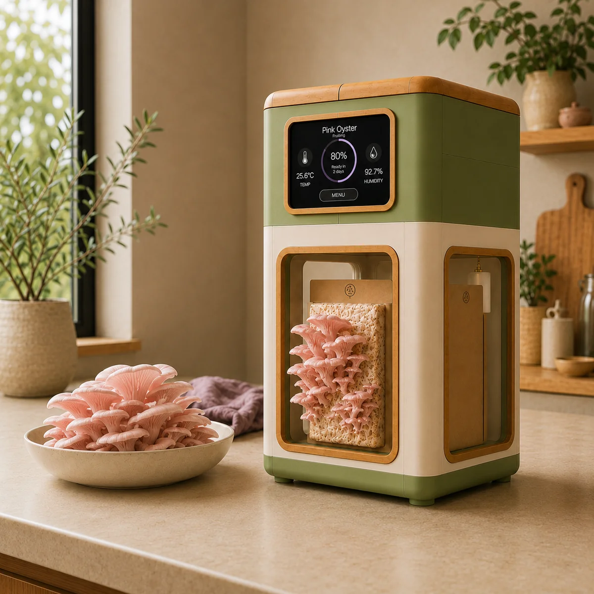
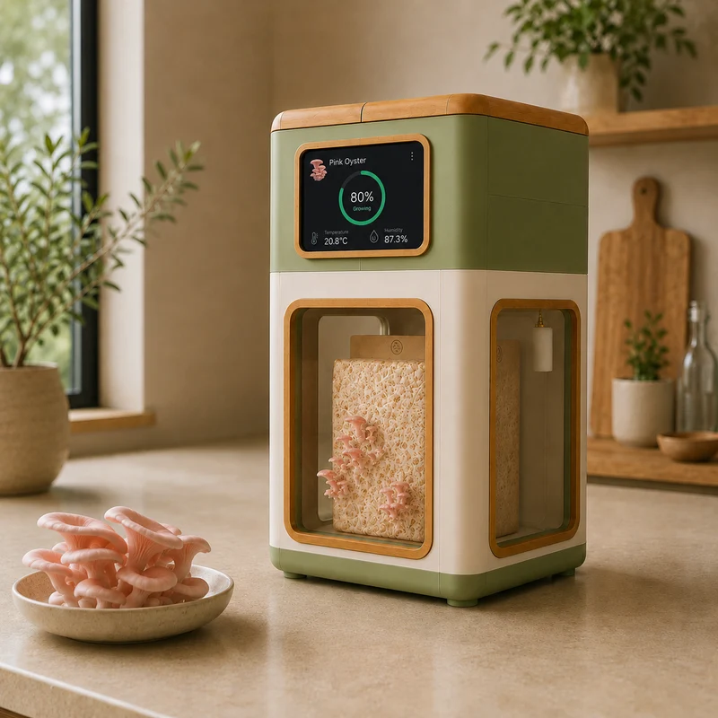
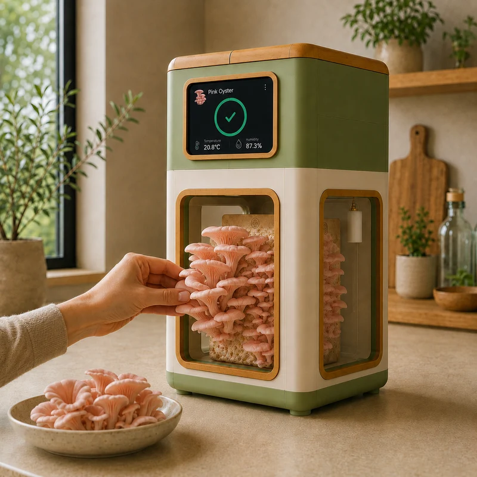
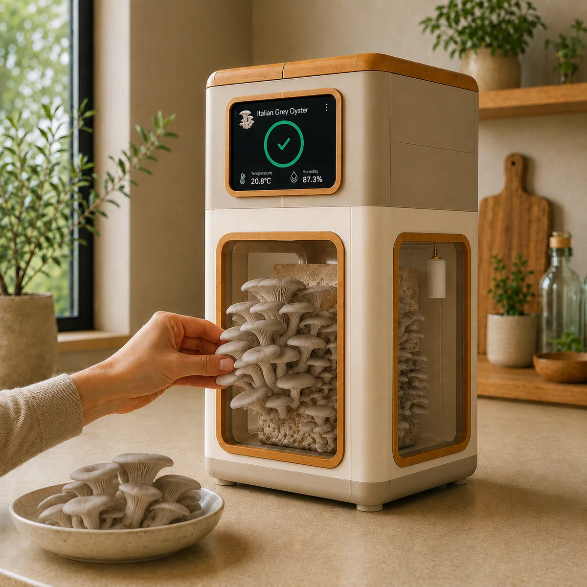

Mycelis
Fresh oyster mushrooms.
Grown at home.
A countertop growing chamber built around a ready-to-grow cartridge.
Join the waitlist

01
Insert.
Place the ready-to-grow cartridge inside. Fill the reservoir.
02
Grow.
The chamber is being developed to manage light, airflow and humidity while mushrooms form.


03
Harvest.
Pick the oyster mushrooms when they are ready.
The cartridge
The grow starts prepared.
Mycelis is being designed around ready-to-grow oyster mushroom cartridges. No substrate mixing or sterilising at home.
After harvest, the cartridge can be removed before the next grow.

Made for the kitchen
An appliance,
not a grow tent.
The enclosure is being shaped for a kitchen bench, with the grow visible and guidance kept on the device.
What it is being built to do
Support the growing environment.
- Water
- A fillable reservoir supports humidity inside the chamber.
- Light + airflow
- Integrated systems are being refined for oyster mushroom fruiting.
- Guidance
- The on-device display is intended to keep the grow understandable without an app.
Development
Currently being refined.
These are active areas of product work, not final specifications.
- Enclosure
Chamber form, cartridge access and reservoir interaction.
- Environment
Airflow, humidity support and integrated lighting.
- Growing trials
Cartridge format, conditions and oyster mushroom varieties.
Mycelis